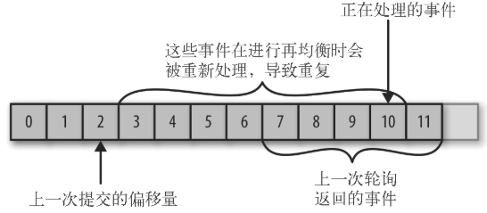
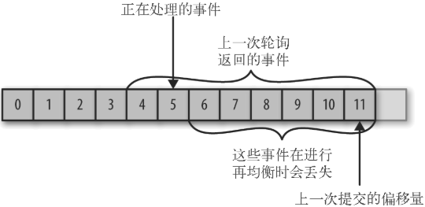

4.6、提交和偏移量
每次调用 poll() 方法，它总是返回由生产者写入 Kafka 但还没有被消费者读取过的记录，因此可以追踪到哪些记录是被群组里的哪个消费者读取的。Kafka 不会像其他 JMS 队列那样需要得到消费者的确认，这是 Kafka 的一个独特之处。相反，消费者可以使用 Kafka 来追踪消息在分区里的位置（偏移量）。
把更新分区当前位置的操作叫作提交。
消费者往一个叫作 _consumer_offset 的特殊主题发送消息，消息里包含每个分区的偏移量。如果消费者一直处于运行状态，那么偏移量就没有什么用处。不过，如果消费者发生崩溃或者有新的消费者加入群组，就会触发再均衡，完成再均衡之后，每个消费者可能分配到新的分区，而不是之前处理的那个。为了能够继续之前的工作，消费者需要读取每个分区最后一次提交的偏移量，然后从偏移量指定的地方继续处理。
如果提交的偏移量小于客户端处理的最后一个消息的偏移量，那么处于两个偏移量之间的消息就会被重复处理。

如果提交的偏移量大于客户端处理的最后一个消息的偏移量，那么处于两个偏移量之间的消息将会丢失。

所以，处理偏移量的方式对客户端会有很大的影响。KafkaConsumer API 提供了很多种方式来提交偏移量。
4.6.1、自动提交
最简单的提交方式是让消费者自动提交偏移量。如果 enable.auto.commit 被设为 true，那么每过 5s（提交时间间隔，由 auto.commit.interval.ms 控制，默认值是 5s），消费者会自动把从 poll() 方法接收到的最大偏移量提交。自动提交也是在轮询里进行的。消费者每次在进行轮询时会检查是否该提交偏移量了，如果是，那么就会提交从上一次轮询返回的偏移量。
假设使用默认的 5s 提交时间间隔，在最近一次提交之后的 3s 发生了再均衡，再均衡之后，消费者从最后一次提交的偏移量位置开始读取消息。这个时候偏移量已经落后了 3s，所以在这 3s 内到达的消息会被重复处理。可以通过修改提交时间间隔来更频繁地提交偏移量，减小可能出现重复消息的时间窗，不过这种情况是无法完全避免的。
在使用自动提交时，每次调用轮询方法都会把上一次调用返回的偏移量提交上去，它并不知道具体哪些消息已经被处理了，所以在再次调用之前最好确保所有当前调用返回的消息都已经处理完毕（在调用 close() 方法之前也会进行自动提交）。一般情况下不会有什么问题，不过在处理异常或提前退出轮询时要格外小心。
自动提交虽然方便，不过并没有为开发者留有余地来避免重复处理消息。
4.6.2、提交当前偏移量
大部分开发者通过控制偏移量提交时间来消除丢失消息的可能性，并在发生再均衡时减少重复消息的数量。消费者 API 提供了另一种提交偏移量的方式，开发者可以在必要的时候提交当前偏移量，而不是基于时间间隔。
把 auto.commit.offset 设为 false，使用 commitSync() 提交偏移量最简单也最可靠。这个 API 会提交由 poll() 方法返回的最新偏移量，提交成功后马上返回，如果提交失败就抛出异常。
要记住，commitSync() 将会提交由 poll() 返回的最新偏移量，所以在处理完所有记录后要确保调用了 commitSync()，否则还是会有丢失消息的风险。如果发生了再均衡，从最近一批消息到发生再均衡之间的所有消息都将被重复处理。
下面是使用 commitSync() 方法提交偏移量的例子：
while (true) {
ConsumerRecords<String, String> records = consumer.poll(100);
for (ConsumerRecord<String, String> record : records)
{
System.out.printf("topic = %s, partition = %s, offset =
%d, customer = %s, country = %s\n",
record.topic(), record.partition(),
record.offset(), record.key(), record.value());// ➊
}
try {
consumer.commitSync();// ➋
} catch (CommitFailedException e) {
log.error("commit failed", e)// ➌
}
}
❶ 假设把记录内容打印出来就算处理完毕，这个是由应用程序根据具体的使用场景来决定的。
❷ 处理完当前批次的消息，在轮询更多的消息之前，调用 commitSync() 方法提交当前批次最新的偏移量。
❸ 只要没有发生不可恢复的错误，commitSync() 方法会一直尝试直至提交成功。如果提交失败，也只能把异常记录到错误日志里。
4.6.3、异步提交
手动提交有一个不足之处，在 broker 对提交请求作出回应之前，应用程序会一直阻塞，这样会限制应用程序的吞吐量。可以通过降低提交频率来提升吞吐量，但如果发生了再均衡，会增加重复消息的数量。可以使用异步提交 API，只管发送提交请求，无需等待 broker 的响应。
while (true) {
ConsumerRecords<String, String> records = consumer.poll(100);
for (ConsumerRecord<String, String> record : records)
{
System.out.printf("topic = %s, partition = %s,
offset = %d, customer = %s, country = %s\n",
record.topic(), record.partition(), record.offset(),
record.key(), record.value());
}
consumer.commitAsync();// ➊
}
➊ 提交最后一个偏移量，然后继续做其他事情。
在成功提交或碰到无法恢复的错误之前，commitSync() 会一直重试，但是 commitAsync() 不会，这也是 commitAsync() 不好的一个地方。它之所以不进行重试，是因为在它收到服务器响应的时候，可能有一个更大的偏移量已经提交成功。假设发出一个请求用于提交偏移量 2000，这个时候发生了短暂的通信问题，服务器收不到请求，自然也不会作出任何响应。与此同时，处理了另外一批消息，并成功提交了偏移量 3000。如果 commitAsync() 重新尝试提交偏移量 2000，它有可能在偏移量 3000 之后提交成功。这个时候如果发生再均衡，就会出现重复消息。
之所以提到这个问题的复杂性和提交顺序的重要性，是因为 commitAsync() 也支持回调，在 broker 作出响应时会执行回调。回调经常被用于记录提交错误或生成度量指标，不过如果要用它来进行重试，一定要注意提交的顺序。
while (true) {
ConsumerRecords<String, String> records = consumer.poll(100);
for (ConsumerRecord<String, String> record : records) {
System.out.printf("topic = %s, partition = %s,
offset = %d, customer = %s, country = %s\n",
record.topic(), record.partition(), record.offset(),
record.key(), record.value());
}
consumer.commitAsync(new OffsetCommitCallback() {
public void onComplete(Map<TopicPartition,
OffsetAndMetadata> offsets, Exception e) {
if (e != null)
log.error("Commit failed for offsets {}", offsets, e);
}
});// ➊
}
➊ 发送提交请求然后继续做其他事情，如果提交失败，错误信息和偏移量会被记录下来。
重试异步提交
可以使用一个单调递增的序列号来维护异步提交的顺序。在每次提交偏移量之后或在回调里提交偏移量时递增序列号。在进行重试前，先检查回调的序列号和即将提交的偏移量是否相等，如果相等，说明没有新的提交，那么可以安全地进行重试。如果序列号比较大，说明有一个新的提交已经发送出去了，应该停止重试。
4.6.4、同步和异步组合提交
一般情况下，针对偶尔出现的提交失败，不进行重试不会有太大问题，因为如果提交失败是因为临时问题导致的，那么后续的提交总会有成功的。但如果这是发生在关闭消费者或再均衡前的最后一次提交，就要确保能够提交成功。因此，在消费者关闭前一般会组合使用 commitAsync() 和 commitSync()。它们的工作原理如下（后面讲到再均衡监听器时，再讨论如何在发生再均衡前提交偏移量）:
try {
while (true) {
ConsumerRecords<String, String> records = consumer.poll(100);
for (ConsumerRecord<String, String> record : records) {
System.out.println("topic = %s, partition = %s, offset = %d,
customer = %s, country = %s\n",
record.topic(), record.partition(),
record.offset(), record.key(), record.value());
}
consumer.commitAsync();// ➊
}
} catch (Exception e) {
log.error("Unexpected error", e);
} finally {
try {
consumer.commitSync();// ➋
} finally {
consumer.close();
}
}
❶ 如果一切正常，使用 commitAsync() 方法来提交。这样速度更快，而且即使这次提交失败，下一次提交很可能会成功。
❷ 如果直接关闭消费者，就没有所谓的「下一次提交」了。使用 commitSync() 方法会一直重试，直到提交成功或发生无法恢复的错误。
4.6.5、提交特定偏移量
提交偏移量的频率与处理消息批次的频率是一样的。但如果想要更频繁地提交该怎么办？如果 poll() 方法返回一大批数据，为了避免因再均衡引起的重复处理整批消息，想要在批次中间提交偏移量该怎么办？这种情况无法通过调用 commitSync() 或 commitAsync() 来实现，因为它们只会提交最后一个偏移量，而此时该批次里的消息还没有处理完。
消费者 API 允许在调用 commitSync() 和 commitAsync() 方法时传进去希望提交的分区和偏移量的 map。假设处理了半个批次的消息，最后一个来自主题「customers」分区 3 的消息的偏移量是 5000，可以调用 commitSync() 方法来提交它。因为消费者可能不只读取一个分区，需要跟踪所有分区的偏移量，所以在这个层面上控制偏移量的提交会让代码变复杂。
下面是提交特定偏移量的例子：
private Map<TopicPartition, OffsetAndMetadata> currentOffsets =
new HashMap<>();// ➊
int count = 0;
...
while (true) {
ConsumerRecords<String, String> records = consumer.poll(100);
for (ConsumerRecord<String, String> record : records)
{
System.out.printf("topic = %s, partition = %s, offset = %d,
customer = %s, country = %s\n",
record.topic(), record.partition(), record.offset(),
record.key(), record.value());// ➋
currentOffsets.put(new TopicPartition(record.topic(), record.partition()), new OffsetAndMetadata(record.offset()+1, "no metadata"));// ➌
if (count % 1000 == 0)// ➍
consumer.commitAsync(currentOffsets,null);// ➎
count++;
}
}
❶ 用于跟踪偏移量的 map。
❷ printf 只是处理消息的临时方案。
❸ 在读取每条记录之后，使用期望处理的下一个消息的偏移量更新 map 里的偏移量。下一次就从这里开始读取消息。
❹ 每处理 1000 条记录就提交一次偏移量。在实际应用中，可以根据时间或记录的内容进行提交。
❺ 这里调用的是 commitAsync()，不过调用commitSync()也是完全可以的。当然，在提交特定偏移量时，仍然要处理可能发生的错误。